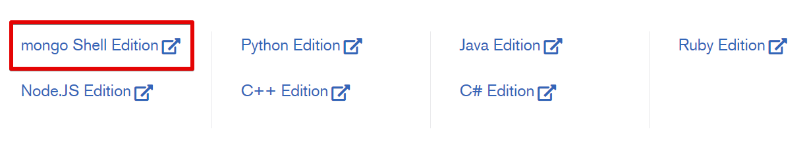

- good with large volumes of fast changing unstructured data;
- agile sprints ready (frequent code pushes);
- geo-distribution (high availability, аuto-sharding)
& scalability (cloud instances, commodity servers);
- multi-structured data (mixed data types, hierarchical data nesting);
- quick schema iteration (no downtime);
- integrated caching (performance, symplicity);
- cross-platform (Linux, macOS, Windows, Docker);
- available for free (community edition);
and more:
- object-oriented API;
- idiomatic drivers (minimize onboarding time for new developers);
- intuitive
- Big Data
- Content Management and Delivery
- Mobile and Social Infrastructure
- User Data Management
- Data Hub
MongoDB available as:
- cloud service (MongoDB Atlas, Stitch...);
- software (community and enterprise editions)
To work with both one needs client software

Mongo Shell is an interactive
JavaScript interface to:
- query and update data;
- perform administrative operations
Start the mongo Shell and Connect to MongoDB
```javascript
// local host, default port
mongo
// local host, custom port
mongo --port 28015
// remote host
mongo "mongodb://mongodb0.example.com:27017"
// there are more options...
```
Navigate to database
```javascript
// display current database
db
// select a database
use myDB
// create a database (when one first store data in the database)
use myNewDB
db.myCollection.insertOne( { x: 1 } );
```
Insert Documents
```javascript
// insert one document
db.myCollection.insertOne( { x: 1, y: 1 } )
// insert several documents
db.myCollection.insertMany([
{ x: 2, y: 2 },
{ x: 3, y: 3 }
])
```
Query Documents
```javascript
// Equality Condition, retrieve documents with x === 1
db.myCollection.find( { x: 1 } )
// x === 1 or x === 2
db.myCollection.find( { x: { $in: [ 1, 2 ] } } )
// AND Condition, x === 2 AND y < 3
db.myCollection.find( { x: 2, y: { $lt: 3} } )
// OR Condition, x === 2 OR y < 3
db.myCollection.find( { $or: [ { x: 2 }, { y: { $lt: 3 } } ] } )
```
Update Documents
```javascript
// update the first document with x === 1
db.myCollection.updateOne(
{ x: 1 },
{
$set: { y: 2},
$currentDate: { lastModified: true }
}
)
// there are updateMany(), replaceOne()
```
Delete Documents
```javascript
// delete the first document with x === 1
db.myCollection.deleteOne( { x: 1 } )
// delete all documents with x === 1
db.myCollection.deleteMany( { x: 1 } )
```
#### The mongo Shell tutorial:
[https://docs.mongodb.com/manual/mongo/](https://docs.mongodb.com/manual/mongo/)
#### Node.js MongoDB Driver:
[https://mongodb.github.io/node-mongodb-native/](https://mongodb.github.io/node-mongodb-native/)
#### Node.js MongoDB Driver API:
[https://mongodb.github.io/node-mongodb-native/3.2/api/](https://mongodb.github.io/node-mongodb-native/3.2/api/)
#### REST API Server for MongoDB built in node.js:
[https://github.com/cordazar/crest](https://github.com/cordazar/crest)
#### Useful links:
- Manual: [https://docs.mongodb.com/manual/](https://docs.mongodb.com/manual)
- Drivers: [https://docs.mongodb.com/ecosystem/drivers/](https://docs.mongodb.com/ecosystem/drivers/)